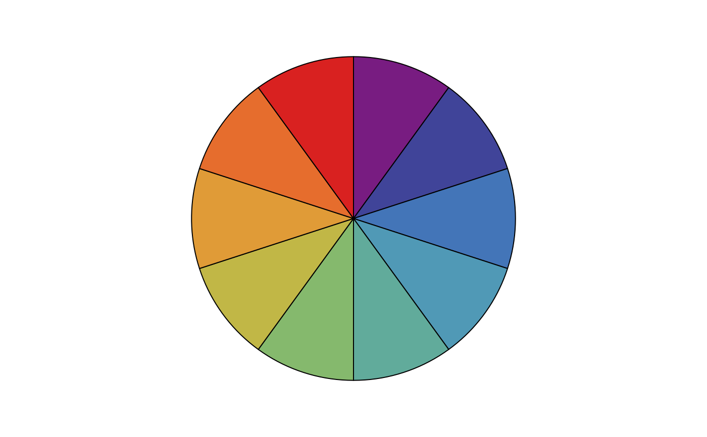
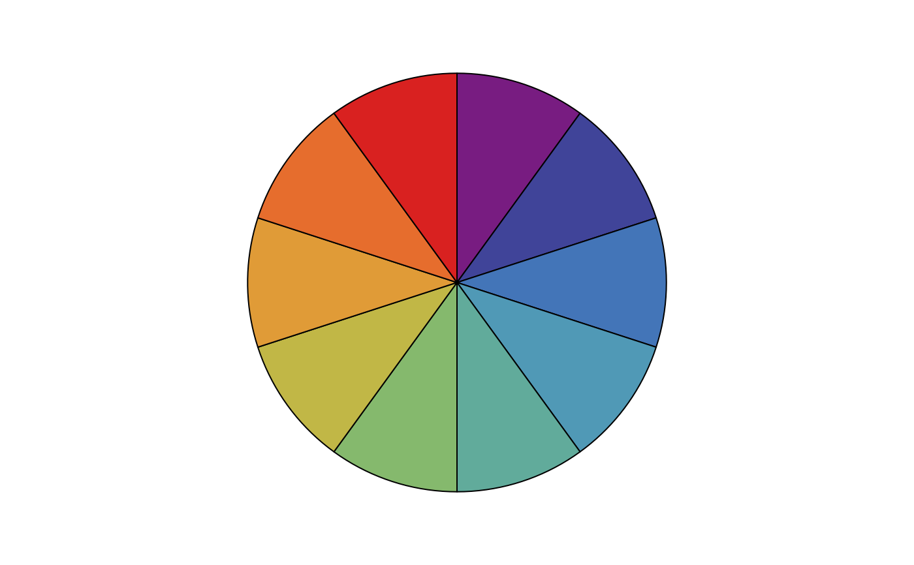
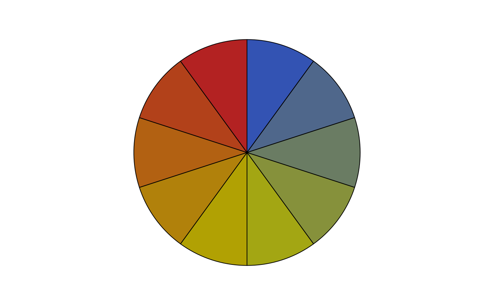
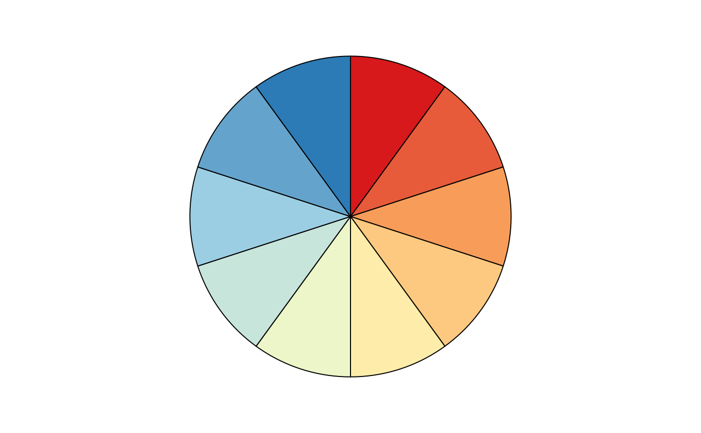
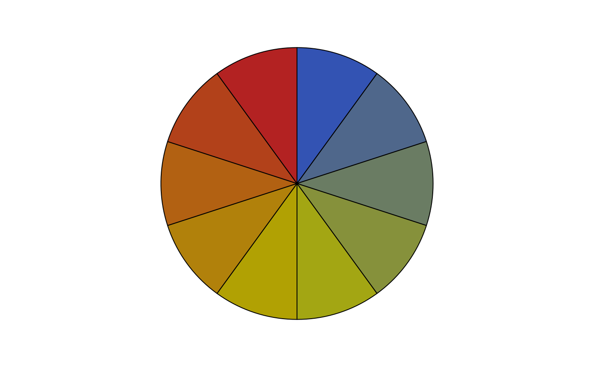
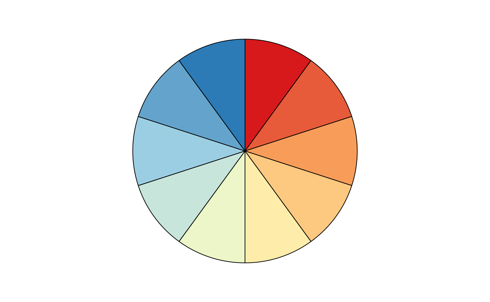
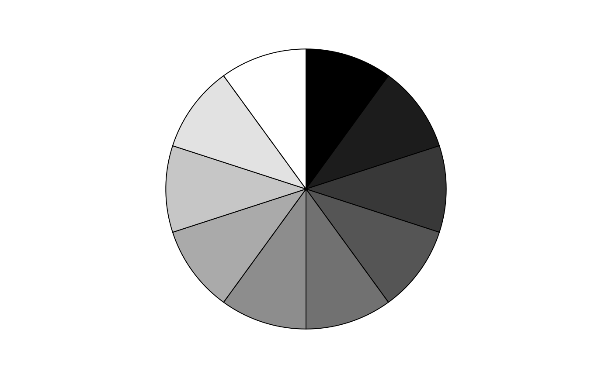
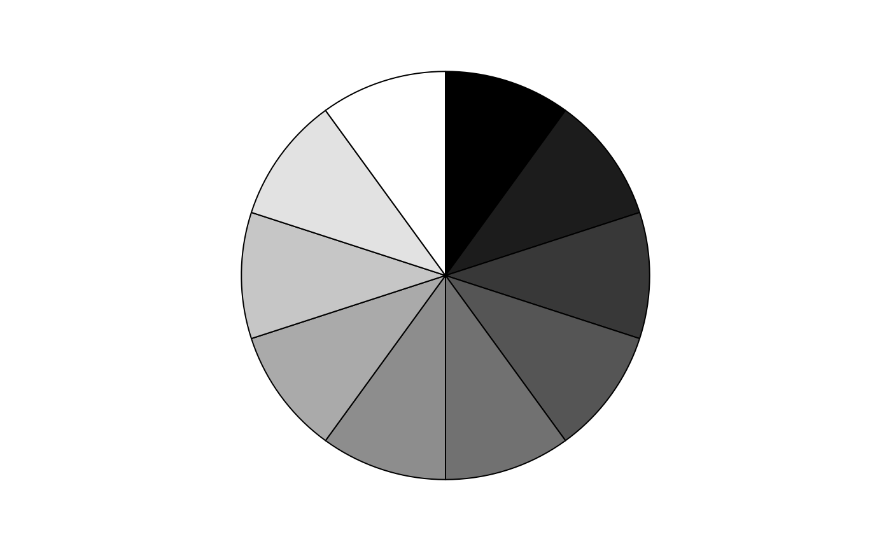

Colors, colors, colors.
Usage
col_summer(n)
col_summer2(n)
col_spring(n)
col_autumn(n)
col_black(n)
col_solarized(n)
col_gallus(n)
col_qual(n)
col_heat(n)
col_hot(n)
col_cold(n)
col_sari(n)
col_india(n)
col_bw(n)
col_grey(n)Note
Among available color palettes, col_solarized is based on Solarized: https://ethanschoonover.com/solarized/;
col_div, col_qual, col_heat, col_cold
and col_gallus are based on on ColorBrewer2: https://colorbrewer2.org/.
Examples
wheel <- function(palette, n=10){
op <- par(mar=rep(0, 4)) ; on.exit(par(op))
pie(rep(1, n), col=palette(n), labels=NA, clockwise=TRUE)}
# Qualitative
wheel(col_qual)
 wheel(col_solarized)
wheel(col_solarized)
 wheel(col_summer)
wheel(col_summer)
 wheel(col_summer2)

wheel(col_spring)
wheel(col_summer2)

wheel(col_spring)
 wheel(col_autumn)

# Divergent
wheel(col_gallus)

wheel(col_india)
wheel(col_autumn)

# Divergent
wheel(col_gallus)

wheel(col_india)
 # Sequential
wheel(col_heat)
# Sequential
wheel(col_heat)
 wheel(col_hot)
wheel(col_hot)
 wheel(col_cold)
wheel(col_cold)
 wheel(col_sari)
wheel(col_sari)
 wheel(col_bw)

wheel(col_grey)
wheel(col_bw)

wheel(col_grey)
 # Black only for pubs
wheel(col_black)
# Black only for pubs
wheel(col_black)